Raster Graphics
Using the software GIMP, I removed the background from picture A and replaced it with picture B. I refered to this video by gimp workshop found here.

Picture A

Picture B
To remove the background, firstly start by clicking Layer > Transparency > Add Alpha Channel.

Next, use the Free Select Tool to outline the parts you want to keep, make sure the starting node is also the last node (closed off).

Next, select Select > Invert.

Lastly, select Edit > Clear. This should make the background transparent.

To change the background, just add in the picture of choice and the finished product should be something like this.

Vector Graphics
Using the software Inkscape, I created a vector image using this picture of a puppy. I refered to this video by Logos by Nick found here to complete this task.

First, you should start by adding a new layer on the top of the current one which is your image. change the opacity of your image layer to about 50% so that you can work on your drawing easily.
Next, use the bezier tool 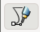 to draw vectors. You can click one point then another and hold and drag to form a curve. An example is shown below.
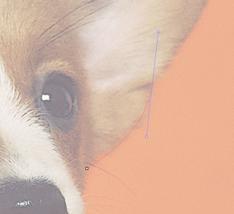
Once you are done with one area, your path should look something like this.
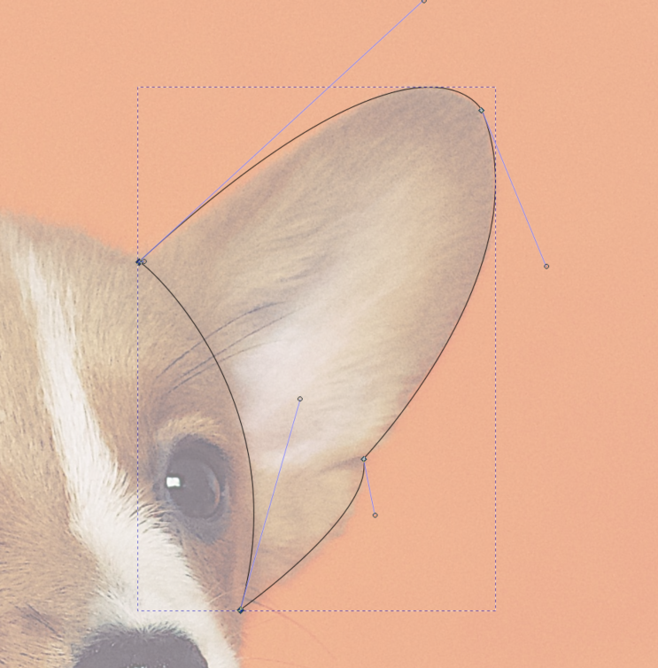
Next, use the edit path tool 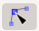 to edit the the curves or lines where needed. You can move nodes or the lines itself. Once you are satisfied, just select the enclosed path area and choose the colour you would like to fill it with. To remove the outline hold 'shift' then click the cross (clear colour).
To create a new area, remember to use a new layer so that it is way more managable. Repeat this process a few times until you are done and have a lovely vector image. I created mine both in colour and greyscale, they can be seen below.
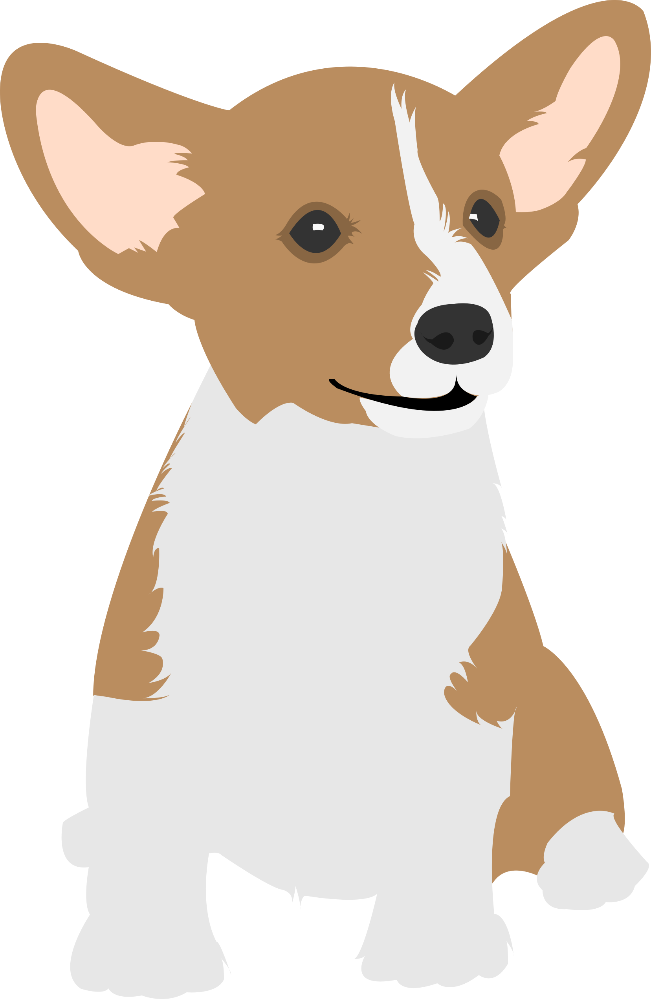
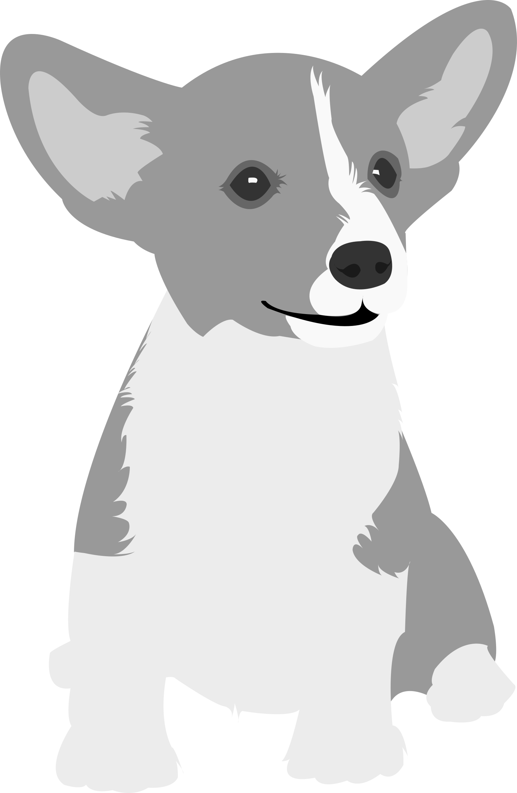
2D Sketching Exercise 1 & 2
Here, we will start the use of Autodesk Fusion 360 as our CAD software. We started learning the basics of CAD by learning how to sketch in Fusion 360. We touched simple sketch functions like lines, circles, rectangle, construction lines, measure, constraints and a few more. Fusion 360 is very similar to Autodesk Inventor that I had previously learnt in one of my year 1 modules.
We started off with exercise 1 which is a simple sketch as seen below. This involved the used of lines, rectangles and circles to complete as well as the trim functiom to make it look neater. The file can be found here.
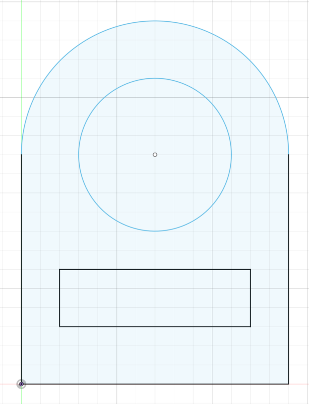
Next for exercise 2, we did a slightly tougher sketch which involved using circles, polygons and construction lines as well as contraints. The file can be found here.
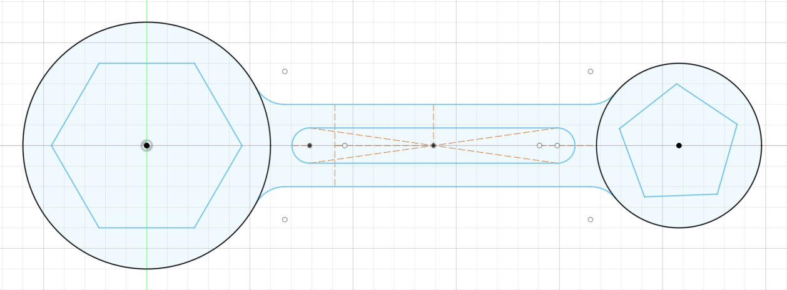
3d Modelling Introduction
For 3D modelling in Fusion 360 there are 3 main methods: Extrusion, Rotation and Sculpting. Extrusion is where you extend a 2D sketch profile into a 3rd plane. Rotation is where you rotate a 2D plane profile around an axis. Sculpting is where you start with a 3D object and by adding, removing, dividing, pulling and pushing the sections form a finished product.
3D Modelling Exercise: Lego Brick
Let's build a Lego Brick! I'm sure you have played with Legos before so why not make them yourself. I would not be going too in depth for this exercise as I followed this video on How to 3D Model a Lego Brick by Product Design Online. You can also follow this tutorial if you are interested.
For this exercise I made use of functions like shell, extrude, pattern and fillet. My finished product is shown below, you can also find the file of what I did here.
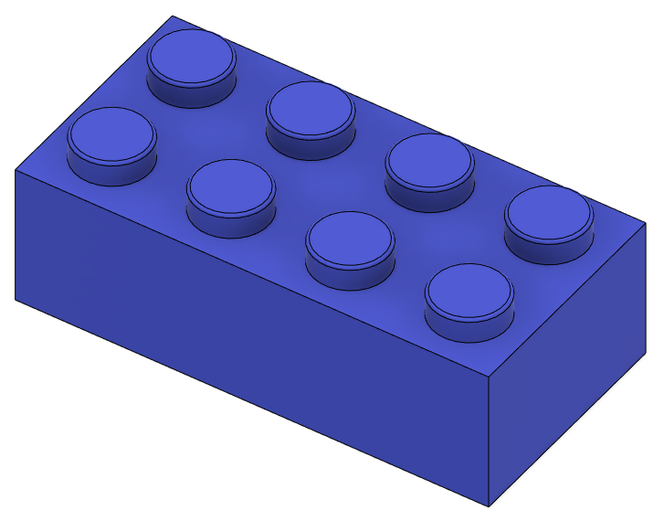
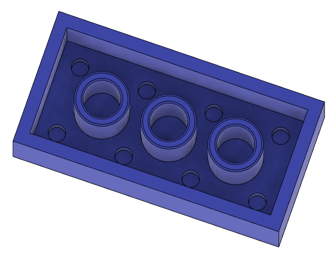
3D Modelling Exercise: Cubes
Make this object that made up of 20 cubes that are 20mm x 20mm x 20mm. This is then shelled to a thickness of 4mm. For this i used functions such as copy and paste, extrude, shell and combine. The file can be found here.
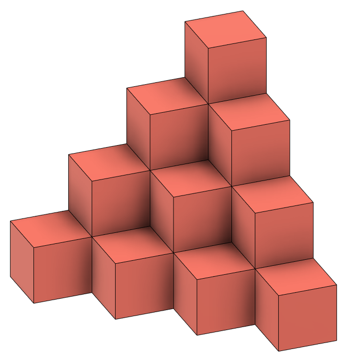
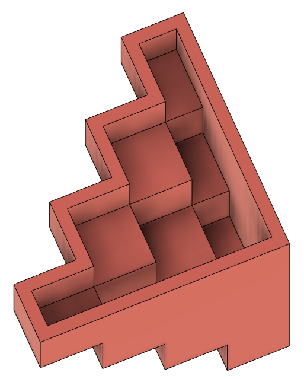
Well, how to create this? There are many methods but what did I use? I took a single cube, copy and pasted it 20 times until the shape was completed. I then combined all the cubes into one body. Next, I shelled the bottom to a thickness of 4mm. That completes this exercise.
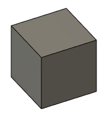
3D Modelling Exercise: Mug with Handle
We are continuing our use of Fusion 360 by making a mug with a handle. The diamensions are 50mm(d) x 80mm(h). We needed to include an arc at the base of the mug and have the thickness be 2.5mm. Add a handle that is 6mm thick, for this it is free and easy.
To create this we first start with creating a sketch of how the main mug body should look like. This sketch profile is then revolved along the centre axis.
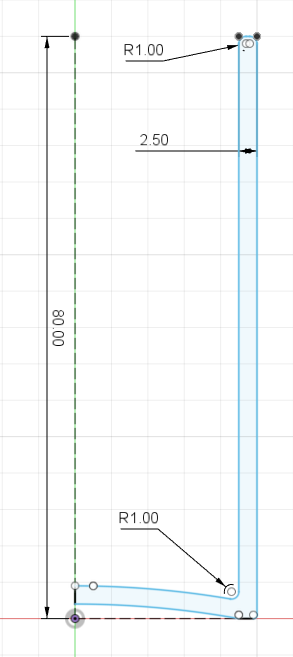
Next, create a new sketch on the same plane as the first and create a handle of your choice. A tip is to create the tips of the handle slightly into the revolved profile so that it is fully inside. For my handle I used the fit point spline function.
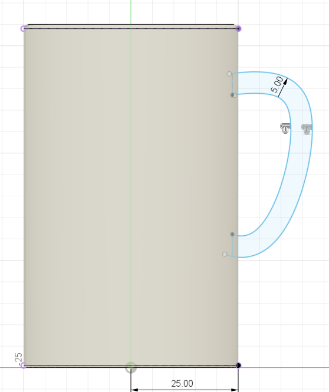
Extrude this handle bar symmetrically to a thickness of 6mm. And the mug is completed!
3D Modelling Exercise: Hex Nut
A hex nut? Yeah it can also be made by 3D modelling
3D Modelling Exercise: Chess Piece - Knight